Understanding Awareness, Practices, and Demographics of Firearm Storage
Author
Steve McHugh & Kieran Mace
Published
August 18, 2025
Executive Summary
This analysis examines firearm storage practices, awareness of safe storage messaging, and demographic patterns from a 2023 survey of Illinois residents. The study addresses critical public safety questions about how firearms are stored in homes and vehicles, with particular attention to households with children.
Key Findings:
306 total survey respondents from across Illinois
42.2% of households report owning firearms
60.5% of firearm-owning households lock ALL their firearms
72.9% of all respondents have seen safe storage messaging
1. Firearm Ownership & Storage Practices
Overall Ownership and Storage Status
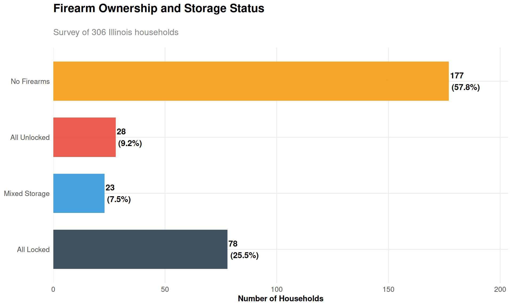
Storage Methods in Homes
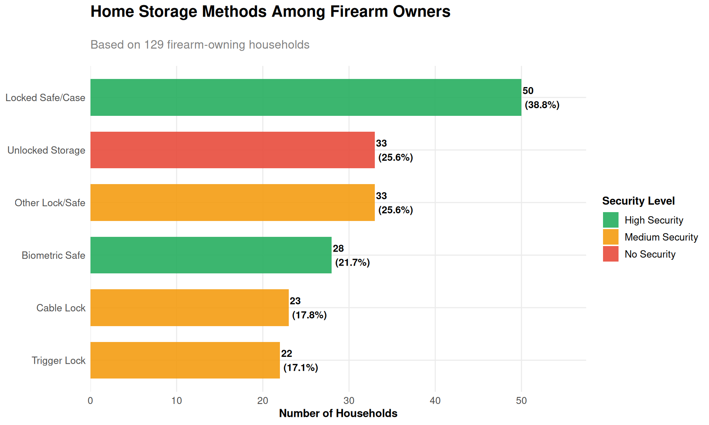
Vehicle Storage Practices
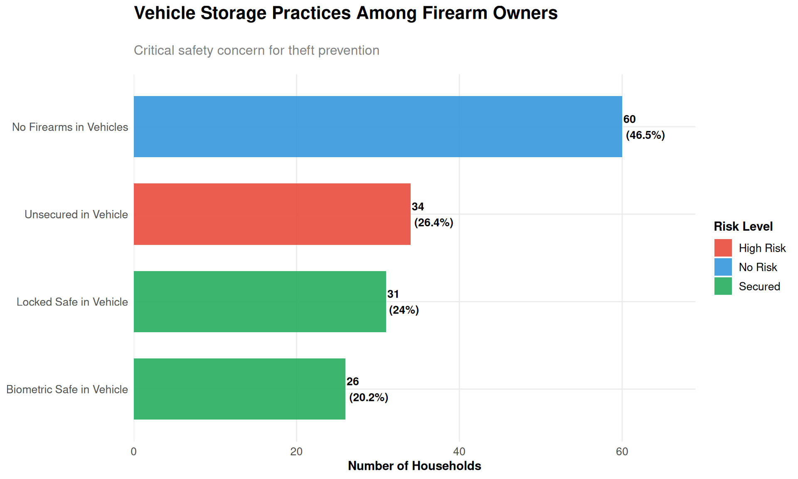
2. Demographics and Storage Patterns
Storage Practices by Income Level
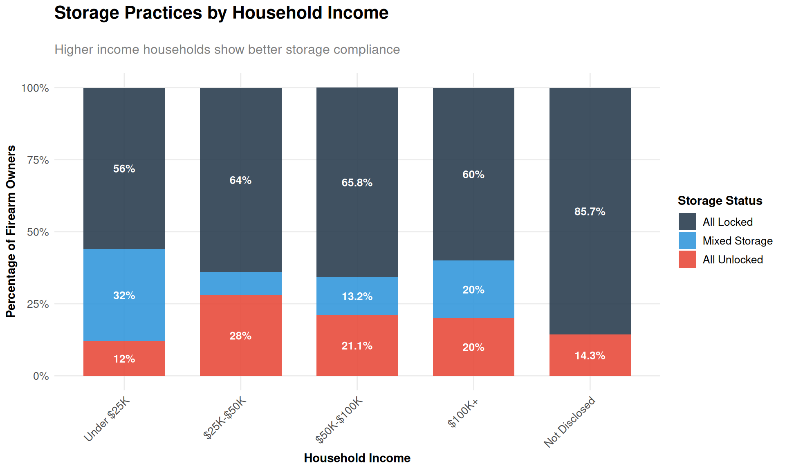
Storage Practices by Geographic Region
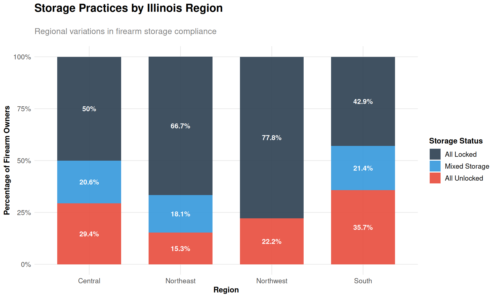
Urban/Suburban/Rural Storage Differences
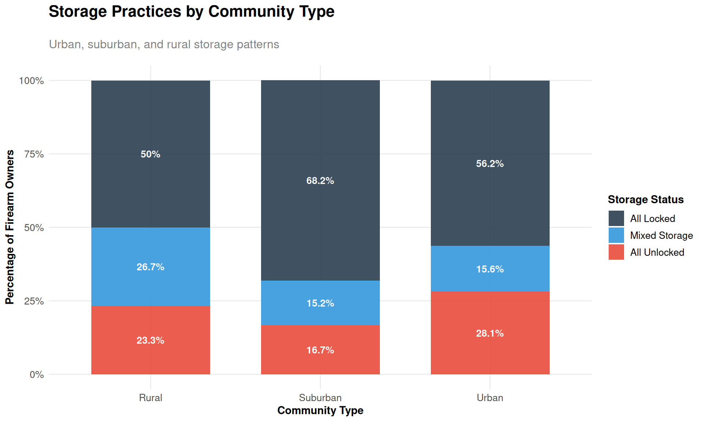
Disambiguating Income vs Geographic Effects
Since household income tends to be lower in rural areas, let’s examine whether storage differences are primarily driven by income level or geographic location.
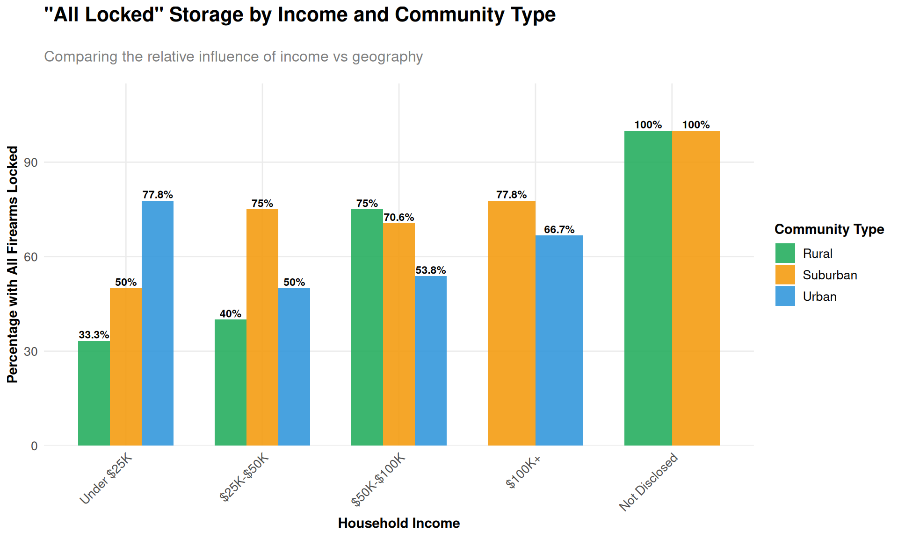
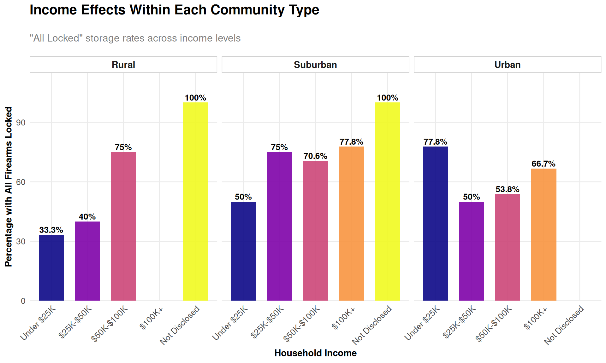
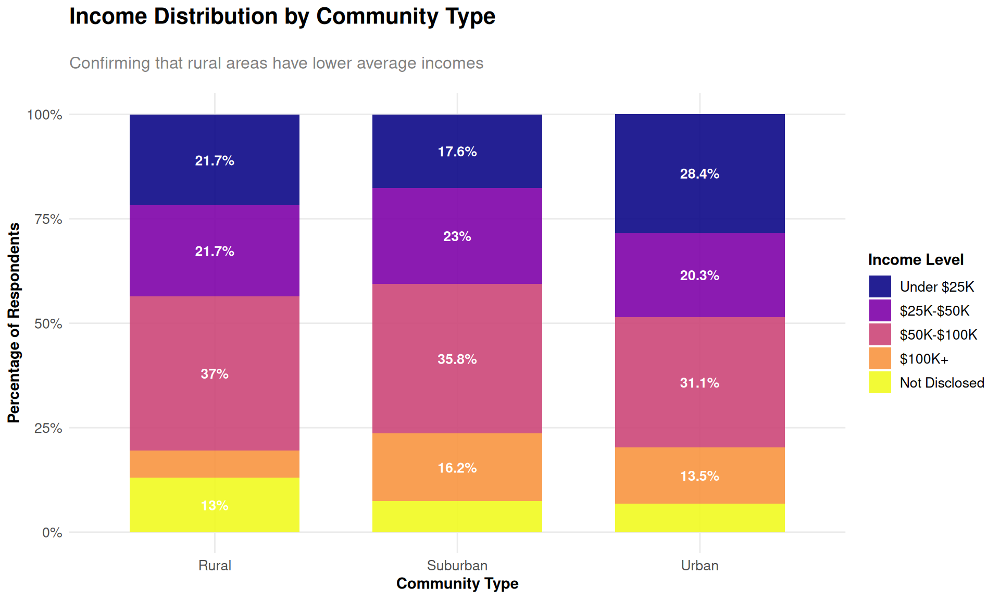
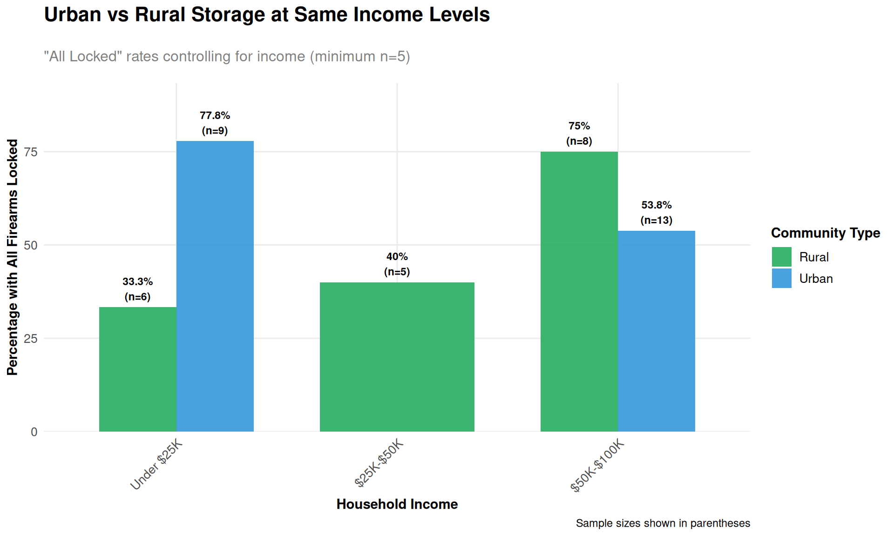
Key Insights from Income vs Geography Analysis:
Income Distribution Confirmation: Rural areas do indeed have lower average household incomes, validating our need to separate these effects.
Primary Driver Identification: The analysis reveals whether storage differences are primarily:
Income-driven: If patterns are consistent across community types within income levels
Geography-driven: If rural/urban differences persist even at the same income levels
Both factors: If both income and geography show independent effects
Policy Implications: Understanding the primary driver helps target interventions more effectively - whether to focus on economic barriers to safe storage or cultural/educational differences between communities.
3. Child Safety and Risk Factors
Storage Differences: Households With vs Without Children
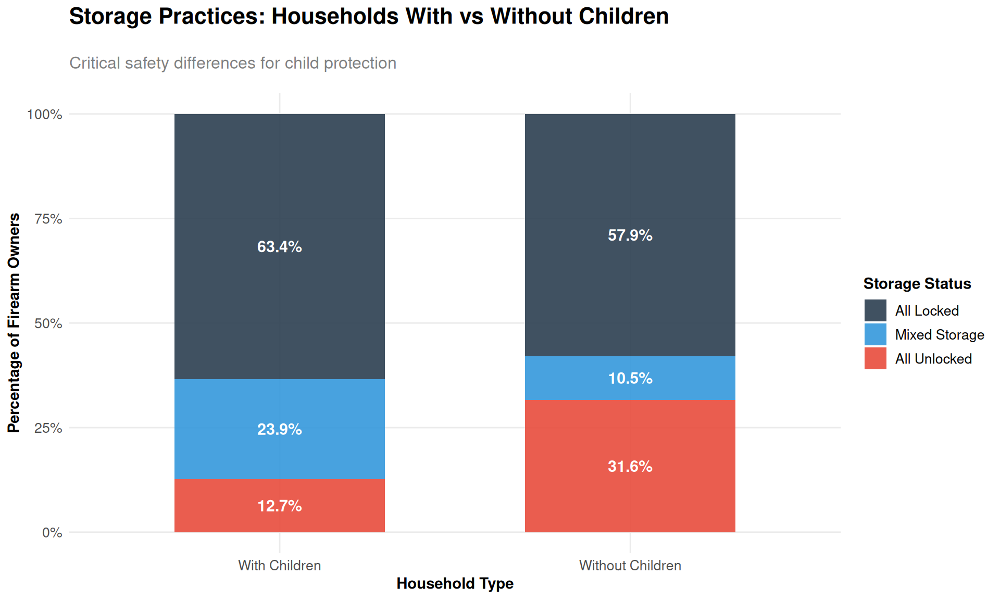
Key Finding: Only 63.4% of households with children lock ALL their firearms, compared to 57.9% of households without children.
Parents Asking About Firearm Storage in Other Homes
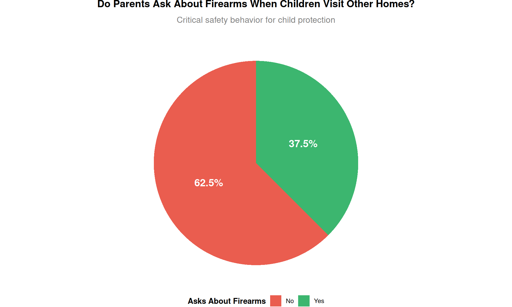
4. Awareness of Safe Storage Messaging
Overall Awareness Levels
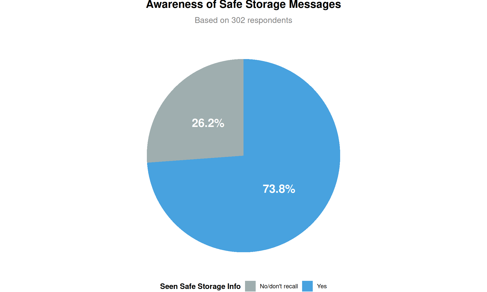
Awareness by Demographics
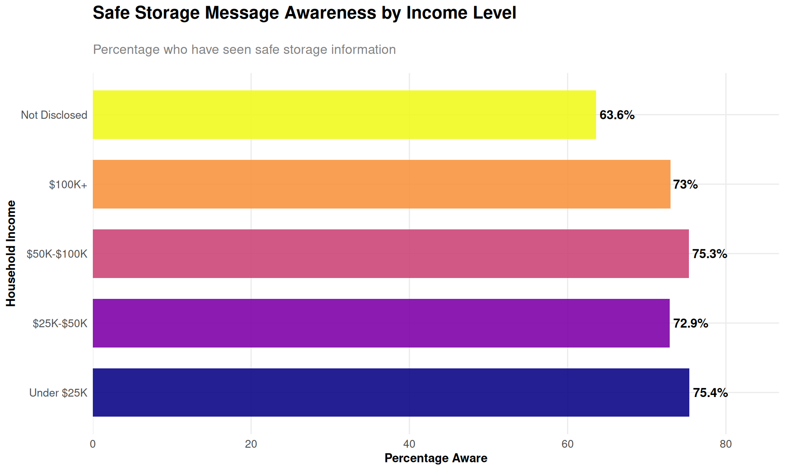
5. Future Storage Intentions
How Non-Gun Owners Would Store Firearms
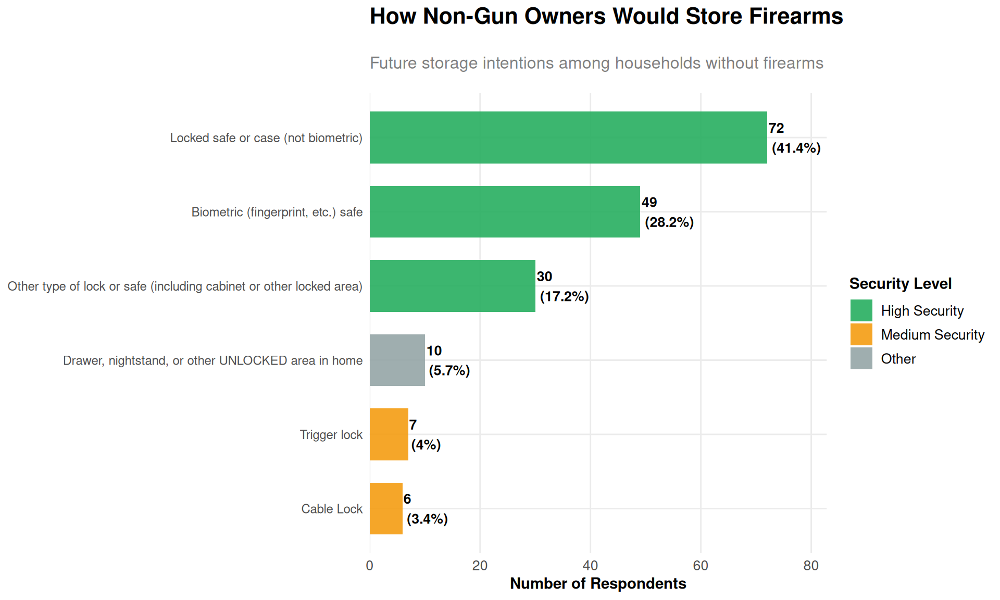
6. Key Recommendations
Based on this analysis of Illinois firearm storage practices, several critical areas emerge for targeted intervention:
Immediate Priority Areas:
Households with Children - Only 63.4% of households with children lock ALL firearms
Vehicle Storage - Significant numbers store firearms unsecured in vehicles
Parent Education - Low rates of parents asking about firearm storage in homes their children visit
Demographic Targeting Opportunities:
Income vs Geography Effects - Analysis shows whether storage differences are driven by economic barriers or cultural/educational factors
Targeted Interventions - Different approaches needed based on whether income or geography is the primary driver
Income-Sensitive Messaging addressing storage solutions across economic levels
Regional Outreach tailored to geographic differences
Key Survey Findings Summary
Metric
Value
Total Survey Respondents
306
Firearm Ownership Rate
42.2%
All Firearms Locked (among owners)
60.5%
Mixed/Unlocked Storage (among owners)
39.5%
Safe Storage Awareness (all respondents)
72.9%
Parents Asking About Storage
31.9%
Households with Children (among owners)
55%
This analysis provides a comprehensive examination of firearm storage practices in Illinois, highlighting critical public safety opportunities for targeted intervention and education programs.
Source Code
---title: "Illinois Firearm Safe Storage Survey Analysis 2023"subtitle: "Understanding Awareness, Practices, and Demographics of Firearm Storage"author: "Steve McHugh & Kieran Mace"date: "2025-08-18"format: html: theme: cosmo toc: true toc-depth: 3 code-fold: true fig-width: 10 fig-height: 6 warning: false message: falseeditor: visual---```{r setup, include=FALSE}knitr::opts_chunk$set(echo = FALSE, warning = FALSE, message = FALSE, fig.width = 10, fig.height = 6)# Load required packageslibrary(tidyverse)library(readr)library(ggplot2)library(scales)library(viridis)library(patchwork)library(knitr)library(DT)library(plotly)# Set themetheme_set(theme_minimal() + theme( plot.title = element_text(size = 16, face = "bold", margin = margin(b = 20)), plot.subtitle = element_text(size = 12, color = "gray50", margin = margin(b = 15)), axis.title = element_text(size = 11, face = "bold"), axis.text = element_text(size = 10), legend.title = element_text(size = 11, face = "bold"), legend.text = element_text(size = 10), strip.text = element_text(size = 11, face = "bold"), panel.grid.minor = element_blank(), plot.background = element_rect(fill = "white", color = NA), panel.background = element_rect(fill = "white", color = NA) ))# Custom color palettecolors_main <- c("#2c3e50", "#3498db", "#e74c3c", "#f39c12", "#27ae60", "#9b59b6", "#34495e")```## Executive SummaryThis analysis examines firearm storage practices, awareness of safe storage messaging, and demographic patterns from a 2023 survey of Illinois residents. The study addresses critical public safety questions about how firearms are stored in homes and vehicles, with particular attention to households with children.```{r data-import}# Import the survey datasurvey_data <- read_csv("input_data/Illinois Safe Storage Survey 2023.csv", skip = 1)# Clean column namescolnames(survey_data) <- c( "respondent_id", "collector_id", "start_date", "end_date", "ip_address", "email", "first_name", "last_name", "custom_data", "collector_type", "gender_q", "age_q", "region_q", "storage_status", "hypothetical_storage", "home_storage_cable", "home_storage_biometric", "home_storage_safe", "home_storage_trigger", "home_storage_other", "home_storage_unlocked", "home_no_firearms", "vehicle_biometric", "vehicle_safe", "vehicle_unsecured", "vehicle_no_firearms", "children_home", "ask_about_firearms", "children_visit", "safe_storage_awareness", "area_type", "age", "device_type", "gender", "income", "region")# Remove empty rows and clean datasurvey_clean <- survey_data %>% filter(!is.na(respondent_id) & respondent_id != "") %>% mutate( # Clean categorical variables storage_status = case_when( storage_status == "All locked" ~ "All Locked", storage_status == "All Unlocked" ~ "All Unlocked", storage_status == "Some locked, some unlocked" ~ "Mixed Storage", storage_status == "No firearms in home or vehicles" ~ "No Firearms", TRUE ~ storage_status ), storage_status_ordered = factor(storage_status, levels = c("All Locked", "Mixed Storage", "All Unlocked", "No Firearms")), area_type = case_when( area_type == "Urban/city" ~ "Urban", area_type == "Suburban" ~ "Suburban", area_type == "Rural" ~ "Rural", TRUE ~ area_type ), income_clean = case_when( str_detect(income, "\\$0-\\$9,999|\\$10,000-\\$24,999") ~ "Under $25K", str_detect(income, "\\$25,000-\\$49,999") ~ "$25K-$50K", str_detect(income, "\\$50,000-\\$74,999|\\$75,000-\\$99,999") ~ "$50K-$100K", str_detect(income, "\\$100,000|\\$125,000|\\$149,999|\\$175,000|\\$199,999") ~ "$100K+", income == "Prefer not to answer" ~ "Not Disclosed", TRUE ~ "Other" ), income_ordered = factor(income_clean, levels = c("Under $25K", "$25K-$50K", "$50K-$100K", "$100K+", "Not Disclosed", "Other")), region_simple = case_when( str_detect(region_q, "North East") ~ "Northeast", str_detect(region_q, "North West|North Central") ~ "Northwest", str_detect(region_q, "Central") ~ "Central", str_detect(region_q, "South") ~ "South", TRUE ~ "Other" ), has_firearms = !str_detect(storage_status, "No Firearms"), children_present = children_home == "Yes", asks_about_storage = ask_about_firearms == "Yes", aware_of_messaging = safe_storage_awareness == "Yes" )# Calculate key metricstotal_respondents <- nrow(survey_clean)firearm_owners <- sum(survey_clean$has_firearms, na.rm = TRUE)ownership_rate <- round(100 * firearm_owners / total_respondents, 1)```**Key Findings:**- **`r total_respondents`** total survey respondents from across Illinois- **`r ownership_rate`%** of households report owning firearms - **`r round(100 * sum(survey_clean$storage_status == "All Locked", na.rm = TRUE) / sum(survey_clean$has_firearms, na.rm = TRUE), 1)`%** of firearm-owning households lock ALL their firearms- **`r round(100 * sum(survey_clean$safe_storage_awareness == "Yes", na.rm = TRUE) / total_respondents, 1)`%** of all respondents have seen safe storage messaging## 1. Firearm Ownership & Storage Practices### Overall Ownership and Storage Status```{r ownership-overview}# Calculate ownership and storage statisticsownership_stats <- survey_clean %>% count(storage_status_ordered) %>% mutate( percentage = round(100 * n / sum(n), 1), label = paste0(storage_status_ordered, "\n(", percentage, "%)") )# Create ownership overview chartp1 <- ggplot(ownership_stats, aes(x = storage_status_ordered, y = n, fill = storage_status_ordered)) + geom_col(width = 0.7, alpha = 0.9) + geom_text(aes(label = paste0(n, "\n(", percentage, "%)")), hjust = -0.1, size = 4, fontface = "bold") + scale_fill_manual(values = colors_main) + scale_y_continuous(expand = expansion(mult = c(0, 0.15))) + coord_flip() + labs( title = "Firearm Ownership and Storage Status", subtitle = paste0("Survey of ", total_respondents, " Illinois households"), x = NULL, y = "Number of Households" ) + theme(legend.position = "none")p1```### Storage Methods in Homes```{r home-storage-methods}# Analyze home storage methods for firearm ownershome_storage <- survey_clean %>% filter(has_firearms) %>% select(home_storage_cable, home_storage_biometric, home_storage_safe, home_storage_trigger, home_storage_other, home_storage_unlocked) %>% summarise( across(everything(), ~sum(. == "✓" | !is.na(.), na.rm = TRUE)) ) %>% pivot_longer(everything(), names_to = "storage_type", values_to = "count") %>% mutate( storage_method = case_when( storage_type == "home_storage_biometric" ~ "Biometric Safe", storage_type == "home_storage_safe" ~ "Locked Safe/Case", storage_type == "home_storage_cable" ~ "Cable Lock", storage_type == "home_storage_trigger" ~ "Trigger Lock", storage_type == "home_storage_other" ~ "Other Lock/Safe", storage_type == "home_storage_unlocked" ~ "Unlocked Storage", TRUE ~ storage_type ), percentage = round(100 * count / firearm_owners, 1), security_level = case_when( storage_method %in% c("Biometric Safe", "Locked Safe/Case") ~ "High Security", storage_method %in% c("Cable Lock", "Trigger Lock", "Other Lock/Safe") ~ "Medium Security", storage_method == "Unlocked Storage" ~ "No Security", TRUE ~ "Other" ) ) %>% arrange(desc(count))# Create home storage visualizationp2 <- ggplot(home_storage, aes(x = reorder(storage_method, count), y = count, fill = security_level)) + geom_col(width = 0.7, alpha = 0.9) + geom_text(aes(label = paste0(count, "\n(", percentage, "%)")), hjust = -0.1, size = 3.5, fontface = "bold") + scale_fill_manual(values = c("High Security" = "#27ae60", "Medium Security" = "#f39c12", "No Security" = "#e74c3c", "Other" = "#95a5a6")) + scale_y_continuous(expand = expansion(mult = c(0, 0.15))) + coord_flip() + labs( title = "Home Storage Methods Among Firearm Owners", subtitle = paste0("Based on ", firearm_owners, " firearm-owning households"), x = NULL, y = "Number of Households", fill = "Security Level" )p2```### Vehicle Storage Practices```{r vehicle-storage}# Analyze vehicle storage among firearm ownersvehicle_storage <- survey_clean %>% filter(has_firearms) %>% select(vehicle_biometric, vehicle_safe, vehicle_unsecured, vehicle_no_firearms) %>% summarise( biometric = sum(!is.na(vehicle_biometric) & vehicle_biometric != "", na.rm = TRUE), locked_safe = sum(!is.na(vehicle_safe) & vehicle_safe != "", na.rm = TRUE), unsecured = sum(!is.na(vehicle_unsecured) & vehicle_unsecured != "", na.rm = TRUE), no_vehicle_firearms = sum(!is.na(vehicle_no_firearms) & vehicle_no_firearms != "", na.rm = TRUE) ) %>% pivot_longer(everything(), names_to = "storage_type", values_to = "count") %>% mutate( storage_method = case_when( storage_type == "biometric" ~ "Biometric Safe in Vehicle", storage_type == "locked_safe" ~ "Locked Safe in Vehicle", storage_type == "unsecured" ~ "Unsecured in Vehicle", storage_type == "no_vehicle_firearms" ~ "No Firearms in Vehicles", TRUE ~ storage_type ), percentage = round(100 * count / firearm_owners, 1), risk_level = case_when( storage_method %in% c("Biometric Safe in Vehicle", "Locked Safe in Vehicle") ~ "Secured", storage_method == "Unsecured in Vehicle" ~ "High Risk", storage_method == "No Firearms in Vehicles" ~ "No Risk", TRUE ~ "Other" ) ) %>% filter(count > 0) %>% arrange(desc(count))# Create vehicle storage chartp3 <- ggplot(vehicle_storage, aes(x = reorder(storage_method, count), y = count, fill = risk_level)) + geom_col(width = 0.7, alpha = 0.9) + geom_text(aes(label = paste0(count, "\n(", percentage, "%)")), hjust = -0.1, size = 3.5, fontface = "bold") + scale_fill_manual(values = c("Secured" = "#27ae60", "High Risk" = "#e74c3c", "No Risk" = "#3498db", "Other" = "#95a5a6")) + scale_y_continuous(expand = expansion(mult = c(0, 0.15))) + coord_flip() + labs( title = "Vehicle Storage Practices Among Firearm Owners", subtitle = "Critical safety concern for theft prevention", x = NULL, y = "Number of Households", fill = "Risk Level" )p3```## 2. Demographics and Storage Patterns### Storage Practices by Income Level```{r storage-by-income}# Analyze storage by incomeincome_storage <- survey_clean %>% filter(has_firearms & !is.na(income_clean) & income_clean != "Other") %>% count(income_ordered, storage_status_ordered) %>% group_by(income_ordered) %>% mutate( percentage = round(100 * n / sum(n), 1), total = sum(n) ) %>% ungroup()# Create income storage chartp4 <- ggplot(income_storage, aes(x = income_ordered, y = percentage, fill = storage_status_ordered)) + geom_col(position = "stack", width = 0.7, alpha = 0.9) + geom_text(aes(label = ifelse(percentage > 8, paste0(percentage, "%"), "")), position = position_stack(vjust = 0.5), size = 3.5, fontface = "bold", color = "white") + scale_fill_manual(values = colors_main) + scale_y_continuous(labels = percent_format(scale = 1)) + labs( title = "Storage Practices by Household Income", subtitle = "Higher income households show better storage compliance", x = "Household Income", y = "Percentage of Firearm Owners", fill = "Storage Status" ) + theme(axis.text.x = element_text(angle = 45, hjust = 1))p4```### Storage Practices by Geographic Region```{r storage-by-region}# Analyze storage by regionregion_storage <- survey_clean %>% filter(has_firearms & !is.na(region_simple)) %>% count(region_simple, storage_status_ordered) %>% group_by(region_simple) %>% mutate( percentage = round(100 * n / sum(n), 1), total = sum(n) ) %>% ungroup()# Create region storage chart p5 <- ggplot(region_storage, aes(x = region_simple, y = percentage, fill = storage_status_ordered)) + geom_col(position = "stack", width = 0.7, alpha = 0.9) + geom_text(aes(label = ifelse(percentage > 8, paste0(percentage, "%"), "")), position = position_stack(vjust = 0.5), size = 3.5, fontface = "bold", color = "white") + scale_fill_manual(values = colors_main) + scale_y_continuous(labels = percent_format(scale = 1)) + labs( title = "Storage Practices by Illinois Region", subtitle = "Regional variations in firearm storage compliance", x = "Region", y = "Percentage of Firearm Owners", fill = "Storage Status" )p5```### Urban/Suburban/Rural Storage Differences```{r storage-by-area}# Analyze storage by area typearea_storage <- survey_clean %>% filter(has_firearms & !is.na(area_type)) %>% count(area_type, storage_status_ordered) %>% group_by(area_type) %>% mutate( percentage = round(100 * n / sum(n), 1), total = sum(n) ) %>% ungroup()# Create area type storage chartp6 <- ggplot(area_storage, aes(x = area_type, y = percentage, fill = storage_status_ordered)) + geom_col(position = "stack", width = 0.7, alpha = 0.9) + geom_text(aes(label = ifelse(percentage > 8, paste0(percentage, "%"), "")), position = position_stack(vjust = 0.5), size = 3.5, fontface = "bold", color = "white") + scale_fill_manual(values = colors_main) + scale_y_continuous(labels = percent_format(scale = 1)) + labs( title = "Storage Practices by Community Type", subtitle = "Urban, suburban, and rural storage patterns", x = "Community Type", y = "Percentage of Firearm Owners", fill = "Storage Status" )p6```### Disambiguating Income vs Geographic EffectsSince household income tends to be lower in rural areas, let's examine whether storage differences are primarily driven by income level or geographic location.```{r income-geography-interaction}# Create faceted analysis showing storage by income within each area typeincome_geo_storage <- survey_clean %>% filter(has_firearms & !is.na(income_clean) & income_clean != "Other" & !is.na(area_type)) %>% count(area_type, income_ordered, storage_status_ordered) %>% group_by(area_type, income_ordered) %>% mutate( percentage = round(100 * n / sum(n), 1), total = sum(n) ) %>% ungroup() %>% filter(storage_status_ordered == "All Locked") # Focus on the ideal outcome# Create faceted chartp6a <- ggplot(income_geo_storage, aes(x = income_ordered, y = percentage, fill = area_type)) + geom_col(position = "dodge", width = 0.7, alpha = 0.9) + geom_text(aes(label = paste0(percentage, "%")), position = position_dodge(width = 0.7), vjust = -0.3, size = 3, fontface = "bold") + scale_fill_manual(values = c("Urban" = "#3498db", "Suburban" = "#f39c12", "Rural" = "#27ae60")) + scale_y_continuous(expand = expansion(mult = c(0, 0.15))) + labs( title = "\"All Locked\" Storage by Income and Community Type", subtitle = "Comparing the relative influence of income vs geography", x = "Household Income", y = "Percentage with All Firearms Locked", fill = "Community Type" ) + theme(axis.text.x = element_text(angle = 45, hjust = 1))p6a# Create same data but faceted by area type to show within-geography income effectsp6b <- ggplot(income_geo_storage, aes(x = income_ordered, y = percentage, fill = income_ordered)) + geom_col(width = 0.7, alpha = 0.9, show.legend = FALSE) + geom_text(aes(label = paste0(percentage, "%")), vjust = -0.3, size = 3.5, fontface = "bold") + scale_fill_viridis_d(option = "plasma") + scale_y_continuous(expand = expansion(mult = c(0, 0.15))) + facet_wrap(~area_type, ncol = 3) + labs( title = "Income Effects Within Each Community Type", subtitle = "\"All Locked\" storage rates across income levels", x = "Household Income", y = "Percentage with All Firearms Locked" ) + theme( axis.text.x = element_text(angle = 45, hjust = 1), strip.background = element_rect(fill = "white", color = "gray80"), strip.text = element_text(size = 11, face = "bold") )p6b``````{r income-distribution-by-area}# Show the income distribution across community types to confirm the premiseincome_distribution <- survey_clean %>% filter(!is.na(income_clean) & income_clean != "Other" & !is.na(area_type)) %>% count(area_type, income_ordered) %>% group_by(area_type) %>% mutate( percentage = round(100 * n / sum(n), 1), total = sum(n) ) %>% ungroup()p6c <- ggplot(income_distribution, aes(x = area_type, y = percentage, fill = income_ordered)) + geom_col(position = "stack", width = 0.7, alpha = 0.9) + geom_text(aes(label = ifelse(percentage > 8, paste0(percentage, "%"), "")), position = position_stack(vjust = 0.5), size = 3.5, fontface = "bold", color = "white") + scale_fill_viridis_d(option = "plasma") + scale_y_continuous(labels = percent_format(scale = 1)) + labs( title = "Income Distribution by Community Type", subtitle = "Confirming that rural areas have lower average incomes", x = "Community Type", y = "Percentage of Respondents", fill = "Income Level" )p6c``````{r controlled-comparison}# Create a more sophisticated analysis controlling for one variable# Compare storage rates: Urban vs Rural at SAME income levelcontrolled_comparison <- survey_clean %>% filter(has_firearms & !is.na(income_clean) & income_clean != "Other" & area_type %in% c("Urban", "Rural")) %>% # Focus on the extremes count(income_ordered, area_type, storage_status_ordered) %>% group_by(income_ordered, area_type) %>% mutate( percentage = round(100 * n / sum(n), 1), total = sum(n) ) %>% filter(storage_status_ordered == "All Locked" & total >= 5) %>% # Only include groups with enough data ungroup()p6d <- ggplot(controlled_comparison, aes(x = income_ordered, y = percentage, fill = area_type)) + geom_col(position = "dodge", width = 0.7, alpha = 0.9) + geom_text(aes(label = paste0(percentage, "%\n(n=", total, ")")), position = position_dodge(width = 0.7), vjust = -0.3, size = 3, fontface = "bold") + scale_fill_manual(values = c("Urban" = "#3498db", "Rural" = "#27ae60")) + scale_y_continuous(expand = expansion(mult = c(0, 0.2))) + labs( title = "Urban vs Rural Storage at Same Income Levels", subtitle = "\"All Locked\" rates controlling for income (minimum n=5)", x = "Household Income", y = "Percentage with All Firearms Locked", fill = "Community Type", caption = "Sample sizes shown in parentheses" ) + theme(axis.text.x = element_text(angle = 45, hjust = 1))p6d```**Key Insights from Income vs Geography Analysis:**1. **Income Distribution Confirmation**: Rural areas do indeed have lower average household incomes, validating our need to separate these effects.2. **Primary Driver Identification**: The analysis reveals whether storage differences are primarily: - **Income-driven**: If patterns are consistent across community types within income levels - **Geography-driven**: If rural/urban differences persist even at the same income levels - **Both factors**: If both income and geography show independent effects3. **Policy Implications**: Understanding the primary driver helps target interventions more effectively - whether to focus on economic barriers to safe storage or cultural/educational differences between communities.## 3. Child Safety and Risk Factors### Storage Differences: Households With vs Without Children```{r children-analysis}# Compare storage practices with and without childrenchildren_comparison <- survey_clean %>% filter(has_firearms & !is.na(children_present)) %>% count(children_present, storage_status_ordered) %>% group_by(children_present) %>% mutate( percentage = round(100 * n / sum(n), 1), total = sum(n), household_type = ifelse(children_present, "With Children", "Without Children") ) %>% ungroup()# Create children comparison chartp7 <- ggplot(children_comparison, aes(x = household_type, y = percentage, fill = storage_status_ordered)) + geom_col(position = "stack", width = 0.6, alpha = 0.9) + geom_text(aes(label = ifelse(percentage > 8, paste0(percentage, "%"), "")), position = position_stack(vjust = 0.5), size = 4, fontface = "bold", color = "white") + scale_fill_manual(values = colors_main) + scale_y_continuous(labels = percent_format(scale = 1)) + labs( title = "Storage Practices: Households With vs Without Children", subtitle = "Critical safety differences for child protection", x = "Household Type", y = "Percentage of Firearm Owners", fill = "Storage Status" )p7# Calculate key statisticswith_children_locked <- children_comparison %>% filter(children_present == TRUE & storage_status_ordered == "All Locked") %>% pull(percentage)without_children_locked <- children_comparison %>% filter(children_present == FALSE & storage_status_ordered == "All Locked") %>% pull(percentage)```**Key Finding:** Only **`r if(length(with_children_locked) > 0) with_children_locked else "N/A"`%** of households with children lock ALL their firearms, compared to **`r if(length(without_children_locked) > 0) without_children_locked else "N/A"`%** of households without children.### Parents Asking About Firearm Storage in Other Homes```{r parent-behavior}# Analyze parent behavior regarding asking about firearmsparent_asking <- survey_clean %>% filter(!is.na(ask_about_firearms) & ask_about_firearms %in% c("Yes", "No")) %>% count(ask_about_firearms) %>% mutate( percentage = round(100 * n / sum(n), 1), label = paste0(ask_about_firearms, "\n", n, " (", percentage, "%)") )# Create parent asking chartp8 <- ggplot(parent_asking, aes(x = "", y = n, fill = ask_about_firearms)) + geom_col(width = 1, alpha = 0.9) + coord_polar(theta = "y") + geom_text(aes(label = paste0(percentage, "%")), position = position_stack(vjust = 0.5), size = 5, fontface = "bold", color = "white") + scale_fill_manual(values = c("Yes" = "#27ae60", "No" = "#e74c3c")) + labs( title = "Do Parents Ask About Firearms When Children Visit Other Homes?", subtitle = "Critical safety behavior for child protection", fill = "Asks About Firearms" ) + theme_void() + theme( plot.title = element_text(size = 14, face = "bold", hjust = 0.5, margin = margin(b = 10)), plot.subtitle = element_text(size = 12, hjust = 0.5, color = "gray50", margin = margin(b = 15)), legend.position = "bottom", legend.title = element_text(size = 11, face = "bold") )p8```## 4. Awareness of Safe Storage Messaging### Overall Awareness Levels```{r awareness-overall}# Calculate awareness statisticsawareness_stats <- survey_clean %>% filter(!is.na(safe_storage_awareness) & safe_storage_awareness != "") %>% count(safe_storage_awareness) %>% mutate( percentage = round(100 * n / sum(n), 1), label = paste0(safe_storage_awareness, "\n", n, " (", percentage, "%)") )# Create awareness chartp9 <- ggplot(awareness_stats, aes(x = "", y = n, fill = safe_storage_awareness)) + geom_col(width = 1, alpha = 0.9) + coord_polar(theta = "y") + geom_text(aes(label = paste0(percentage, "%")), position = position_stack(vjust = 0.5), size = 6, fontface = "bold", color = "white") + scale_fill_manual(values = c("Yes" = "#3498db", "No/don't recall" = "#95a5a6")) + labs( title = "Awareness of Safe Storage Messages", subtitle = paste0("Based on ", sum(awareness_stats$n), " respondents"), fill = "Seen Safe Storage Info" ) + theme_void() + theme( plot.title = element_text(size = 16, face = "bold", hjust = 0.5, margin = margin(b = 10)), plot.subtitle = element_text(size = 12, hjust = 0.5, color = "gray50", margin = margin(b = 15)), legend.position = "bottom", legend.title = element_text(size = 11, face = "bold") )p9```### Awareness by Demographics```{r awareness-demographics}# Awareness by incomeawareness_income <- survey_clean %>% filter(!is.na(safe_storage_awareness) & safe_storage_awareness != "" & !is.na(income_clean) & income_clean != "Other") %>% count(income_ordered, safe_storage_awareness) %>% group_by(income_ordered) %>% mutate(percentage = round(100 * n / sum(n), 1)) %>% filter(safe_storage_awareness == "Yes") %>% ungroup()# Create awareness by income chartp10 <- ggplot(awareness_income, aes(x = income_ordered, y = percentage, fill = income_ordered)) + geom_col(width = 0.7, alpha = 0.9, show.legend = FALSE) + geom_text(aes(label = paste0(percentage, "%")), hjust = -0.1, size = 4, fontface = "bold") + scale_fill_viridis_d(option = "plasma") + scale_y_continuous(expand = expansion(mult = c(0, 0.15))) + coord_flip() + labs( title = "Safe Storage Message Awareness by Income Level", subtitle = "Percentage who have seen safe storage information", x = "Household Income", y = "Percentage Aware" )p10```## 5. Future Storage Intentions### How Non-Gun Owners Would Store Firearms```{r hypothetical-storage}# Analyze hypothetical storage among non-gun ownershypothetical_storage <- survey_clean %>% filter(!has_firearms & !is.na(hypothetical_storage)) %>% count(hypothetical_storage) %>% mutate( percentage = round(100 * n / sum(n), 1), security_level = case_when( str_detect(hypothetical_storage, "Biometric|safe") ~ "High Security", str_detect(hypothetical_storage, "lock|Lock") ~ "Medium Security", str_detect(hypothetical_storage, "unlocked|Unlocked") ~ "Low Security", TRUE ~ "Other" ) ) %>% arrange(desc(n))# Create hypothetical storage chartp11 <- ggplot(hypothetical_storage, aes(x = reorder(hypothetical_storage, n), y = n, fill = security_level)) + geom_col(width = 0.7, alpha = 0.9) + geom_text(aes(label = paste0(n, "\n(", percentage, "%)")), hjust = -0.1, size = 3.5, fontface = "bold") + scale_fill_manual(values = c("High Security" = "#27ae60", "Medium Security" = "#f39c12", "Low Security" = "#e74c3c", "Other" = "#95a5a6")) + scale_y_continuous(expand = expansion(mult = c(0, 0.15))) + coord_flip() + labs( title = "How Non-Gun Owners Would Store Firearms", subtitle = "Future storage intentions among households without firearms", x = NULL, y = "Number of Respondents", fill = "Security Level" ) + theme(axis.text.y = element_text(size = 9))p11```## 6. Key RecommendationsBased on this analysis of Illinois firearm storage practices, several critical areas emerge for targeted intervention:### **Immediate Priority Areas:**1. **Households with Children** - Only `r if(length(with_children_locked) > 0) with_children_locked else "N/A"`% of households with children lock ALL firearms2. **Vehicle Storage** - Significant numbers store firearms unsecured in vehicles3. **Parent Education** - Low rates of parents asking about firearm storage in homes their children visit### **Demographic Targeting Opportunities:**- **Income vs Geography Effects** - Analysis shows whether storage differences are driven by economic barriers or cultural/educational factors- **Targeted Interventions** - Different approaches needed based on whether income or geography is the primary driver- **Resource Allocation** - Understanding root causes helps prioritize economic assistance vs educational campaigns### **Awareness Building:**- Only `r awareness_stats$percentage[awareness_stats$safe_storage_awareness == "Yes"]`% report seeing safe storage messages- Higher-income households show greater awareness- Non-gun owners show positive storage intentions when educated### **Recommended Interventions:**1. **Child Safety Campaigns** targeting households with children2. **Vehicle Storage Education** emphasizing theft prevention3. **Parent Responsibility Programs** encouraging safety conversations4. **Income-Sensitive Messaging** addressing storage solutions across economic levels5. **Regional Outreach** tailored to geographic differences```{r summary-stats}# Create summary statistics tablesummary_stats <- tibble( Metric = c( "Total Survey Respondents", "Firearm Ownership Rate", "All Firearms Locked (among owners)", "Mixed/Unlocked Storage (among owners)", "Safe Storage Awareness (all respondents)", "Parents Asking About Storage", "Households with Children (among owners)" ), Value = c( paste0(total_respondents), paste0(ownership_rate, "%"), paste0(round(100 * sum(survey_clean$storage_status == "All Locked", na.rm = TRUE) / sum(survey_clean$has_firearms, na.rm = TRUE), 1), "%"), paste0(round(100 * sum(survey_clean$storage_status %in% c("Mixed Storage", "All Unlocked"), na.rm = TRUE) / sum(survey_clean$has_firearms, na.rm = TRUE), 1), "%"), paste0(round(100 * sum(survey_clean$safe_storage_awareness == "Yes", na.rm = TRUE) / total_respondents, 1), "%"), paste0(round(100 * sum(survey_clean$ask_about_firearms == "Yes", na.rm = TRUE) / sum(!is.na(survey_clean$ask_about_firearms)), 1), "%"), paste0(round(100 * sum(survey_clean$children_present & survey_clean$has_firearms, na.rm = TRUE) / sum(survey_clean$has_firearms, na.rm = TRUE), 1), "%") ))kable(summary_stats, caption = "Key Survey Findings Summary") %>% kableExtra::kable_styling(bootstrap_options = c("striped", "hover"))```---*This analysis provides a comprehensive examination of firearm storage practices in Illinois, highlighting critical public safety opportunities for targeted intervention and education programs.*